Ein Copter entsteht, Teil 1: Vom Entwurf zum ersten Teil
Bevor ein Rahmen gefräst wird, entsteht er zweimal: einmal als Rechnung und einmal als gedrucktes Probemodell. In dieser Serie zeigen wir, wie unser 13-Zoll-Copter DracoP07 Schritt für Schritt entsteht, mit allen Zahlen, Druckteilen und Fehlschlägen.
Neuigkeiten · Baubericht DracoP07 · Teil 1 von 3 · Lesezeit ca. 8 Min · Stand: Oktober 2026
Kurz gesagt
- Der DracoP07 ist ein 13-Zoll-Copter in Deadcat-Bauweise mit 652 mm Radstand. Er fliegt wahlweise mit 13- oder 14-Zoll-Propellern.
- Die Auslegung rechnet mit rund 3,0 kg Abflugmasse und etwa 20 Minuten Schwebezeit mit einem Akku. Alle Werte sind gerechnet, gemessen wird beim Erstflug.
- Platten und Arme werden später aus Carbon gefräst. Für den Probeaufbau haben wir sie vorab in PETG-CF gedruckt, um Form und Passung zu prüfen.
- Teil 2 zeigt den Probeaufbau mit Löten und Verkabeln, Teil 3 den finalen Aufbau mit den gefrästen Carbonteilen.
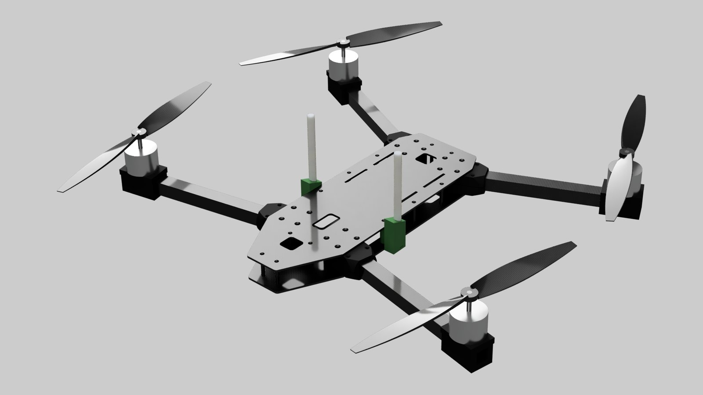
Was wir bauen
Der DracoP07 ist ein Copter für lange Flüge mit Kamera, kein Racer für enge Kurven. Die Bauform heißt Deadcat: Die vorderen Arme stehen deutlich weiter auseinander als die hinteren. So bleiben die Propeller aus dem Bild der Frontkamera, und der Rumpf kann trotzdem kompakt bleiben. Beim P07 liegen die vorderen Motoren 560 mm auseinander, die hinteren 500 mm, und der Radstand von vorn links nach hinten rechts beträgt 652 mm.
Der Rumpf besteht aus zwei Carbonplatten mit je 3 mm Stärke, die über Abstandsbolzen verschraubt sind. Die Arme sind Vierkantrohre aus Carbon, die in gedruckten Klemmblöcken am Rumpf sitzen. An ihren Enden tragen sie die Motorhalter. Alles, was weich sein darf oder muss, entsteht im 3D-Drucker aus TPU, einem gummiartigen Kunststoff: Halter für Antennen, Empfänger, GPS und Akkustecker, dazu die Landefüße.
Gefahren wird mit 13-Zoll-Propellern, für ruhige Flüge auch mit 14 Zoll. Beide Größen passen ohne Umbau an den Rahmen, die Wahl hängt von der Flugsituation ab. Was die Propellergröße beim Wirkungsgrad ausmacht, haben wir im Propeller-Ratgeber zusammengefasst.
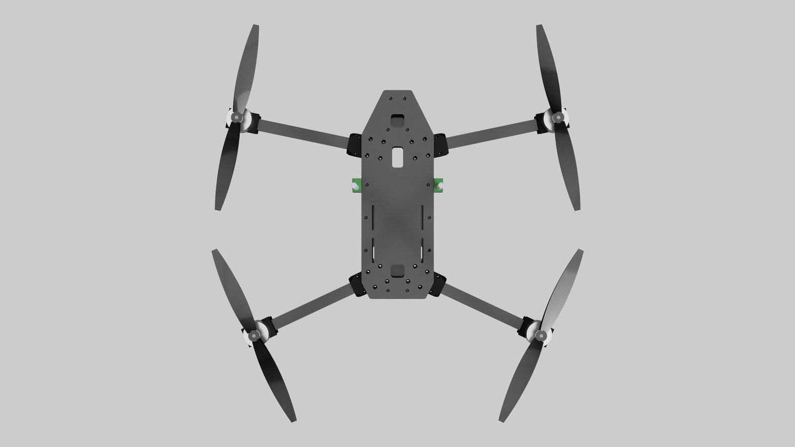
Erst die Rechnung, dann das Teil
Bevor wir irgendetwas bestellen oder drucken, entsteht der Copter als Rechenmodell. Darin stehen alle Bauteile mit ihrer Masse und Lage, von den Motoren bis zu Kabelbindern und Schrauben. Aus dieser Liste folgen Abflugmasse, Schwerpunkt, Schub und Schwebezeit, und aus denselben Zahlen entsteht die Zeichnung. Ändert sich ein Teil, wird alles neu gerechnet, damit Zeichnung und Rechnung nicht auseinanderlaufen.
| Größe | 13-Zoll-Propeller | 14-Zoll-Propeller |
|---|---|---|
| Abflugmasse mit einem Akku | 3.043 g | 3.047 g |
| Schub zu Gewicht, roh | 1,91 | 2,57 |
| Schub zu Gewicht mit 15 % Sicherheitsabschlag | 1,62 | 2,19 |
| Schwebezeit mit einem Akku | rund 20 min | rund 23 min |
| Arm-Eigenfrequenz (Frontarm) | 121 Hz bei 109 Hz Mindestwert | |
Alle Werte sind gerechnet, nicht gemessen. Knapp die Hälfte der Masse stammt aus Datenblättern der Hersteller, der Rest ist berechnet oder geschätzt. Gewogen und gemessen wird am fertigen Copter, das zeigen wir in Teil 3.
Zwei Zahlen verdienen einen zweiten Blick. Das Verhältnis von Schub zu Gewicht liegt mit 13-Zoll-Propellern bei 1,91 und damit knapp unter dem Wert 2:1, den man für sicheres Fliegen als Untergrenze ansetzt. Mit 14-Zoll-Propellern steigt es auf 2,57. Ob die Reserve mit 13 Zoll im Wind genügt, klären erst die Flüge.
Die zweite Zahl ist die Eigenfrequenz der Arme. Jeder Arm schwingt wie ein Lineal, das man an der Tischkante anschlägt, mit einer eigenen Frequenz. Liegt sie zu nah an der Drehfrequenz der Propeller, schaukelt sich die Schwingung auf, und der Flugregler bekommt verrauschte Messwerte. Im Schwebeflug drehen die Propeller rund 84-mal pro Sekunde, also mit 84 Hz. Wir verlangen 30 Prozent Abstand, also mindestens 109 Hz, und gerechnet ist der Frontarm mit 121 Hz. Dabei setzen wir für das Carbonrohr bewusst einen niedrigen Steifigkeitswert an. Was ein Carbonrohr steif macht, steht im Ratgeber zum Carbonrahmen.
Wie der Rahmen schwingt
Die Formel für einen einzelnen Arm ist nur der erste Schritt. Im fertigen Copter hängen vier Arme an zwei Platten, und die Teile beeinflussen sich gegenseitig. Deshalb haben wir den ganzen Rahmen in einer FEM-Simulation nachgerechnet. Dabei wird das Modell in ein feines Netz mit rund 354.000 Knotenpunkten zerlegt, und für jeden davon wird gerechnet, wie er sich unter Last bewegt. Heraus kommen die Eigenfrequenzen des ganzen Rahmens und die Form, in der er bei jeder davon schwingt.
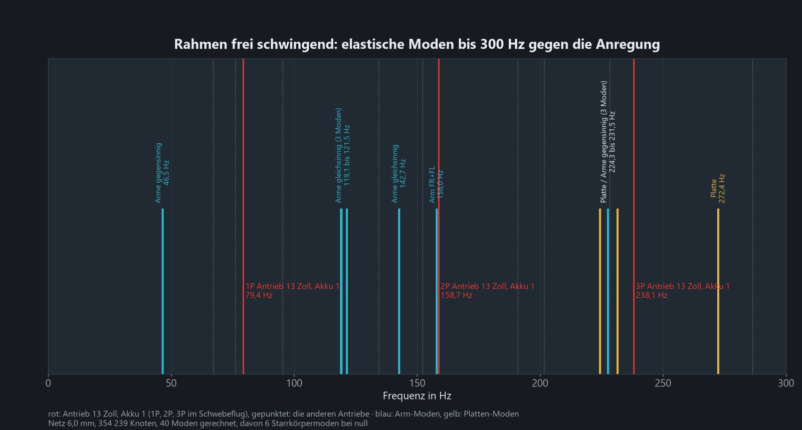
Die erste echte Schwingung liegt bei 46,5 Hz, dabei wippen die Arme gegensinnig. Sie liegt rund 40 Prozent unter der Drehfrequenz der Propeller im Schwebeflug und damit weit weg von der stärksten Anregung. Ab 119 Hz folgt eine Gruppe, in der die Arme gemeinsam auf und ab schwingen, passend zur Rechnung für den Einzelarm. Spannend ist die Schwingung bei 158 Hz, an der nur die beiden Vorderarme beteiligt sind. Sie liegt sehr nah an der doppelten Drehfrequenz der Propeller, denn ein Zweiblatt-Propeller stößt den Arm bei jeder Umdrehung zweimal an. Ob das im Flug stört, zeigt erst das Schwingungsprotokoll des Flugreglers beim Erstflug. Im echten Rahmen sind die Schraubverbindungen außerdem etwas weicher als im Modell, die Frequenzen liegen also eher etwas tiefer.
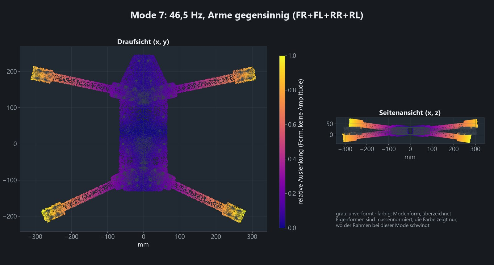
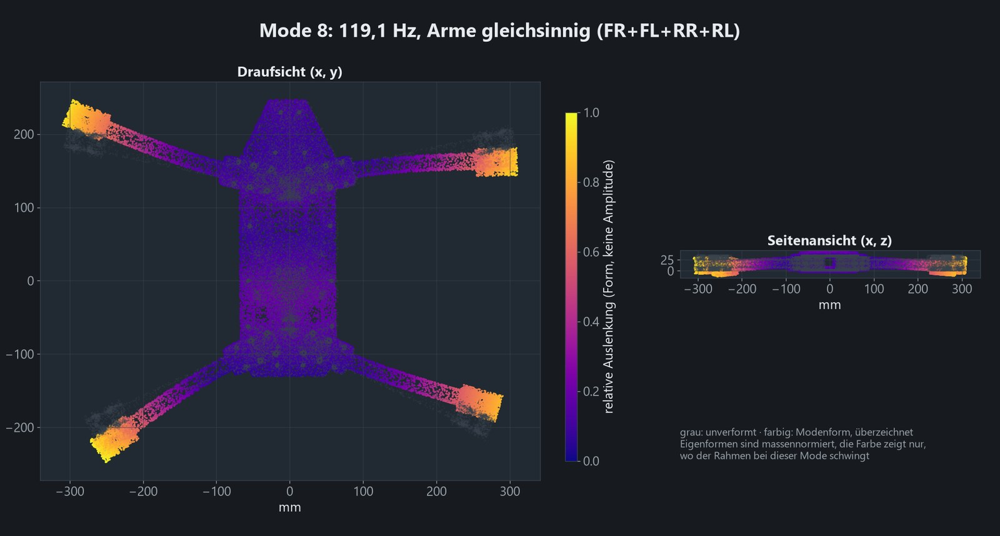
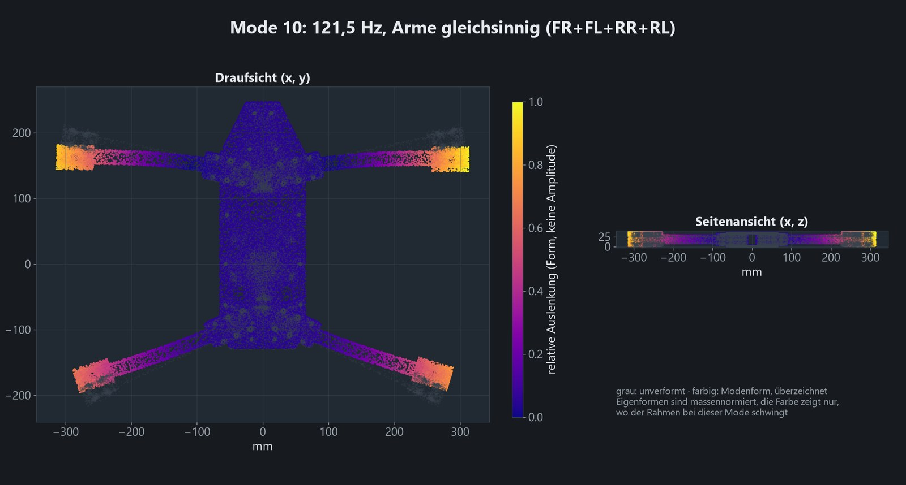
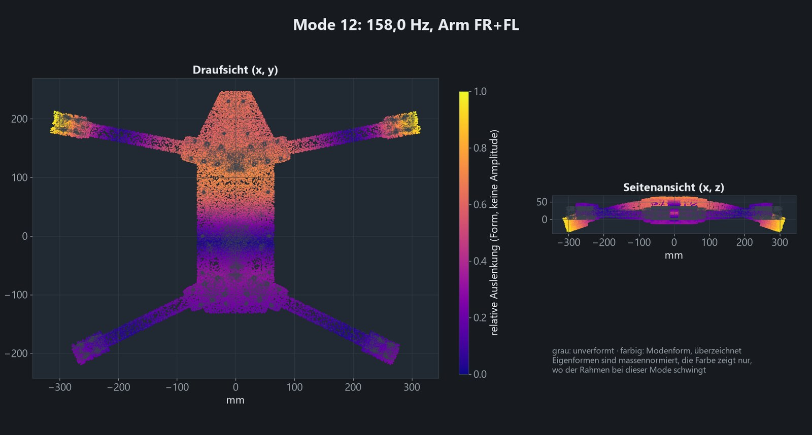
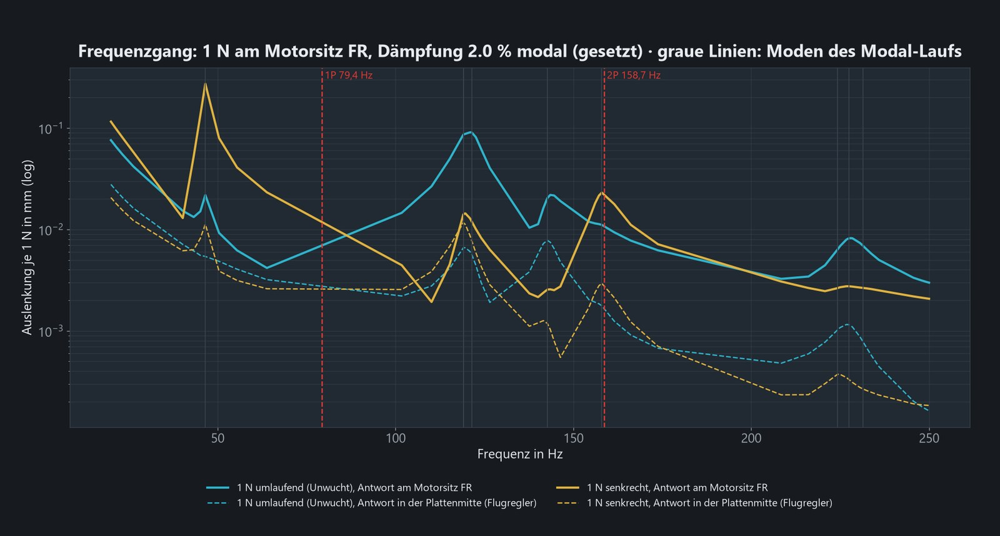
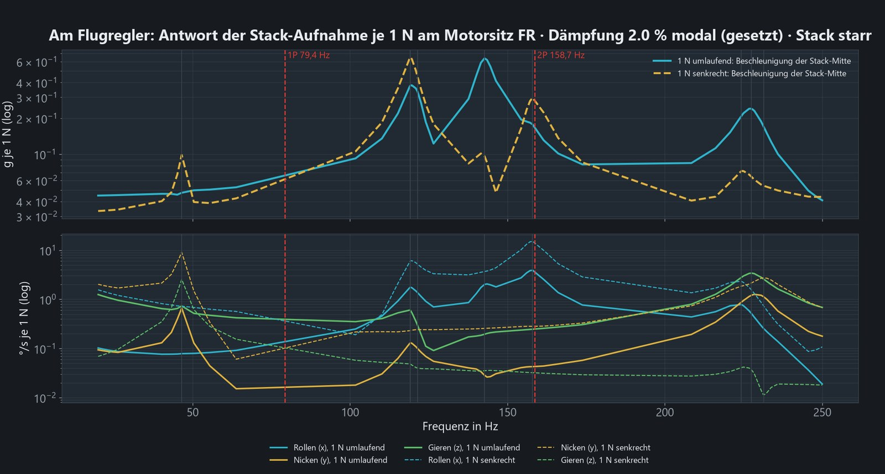
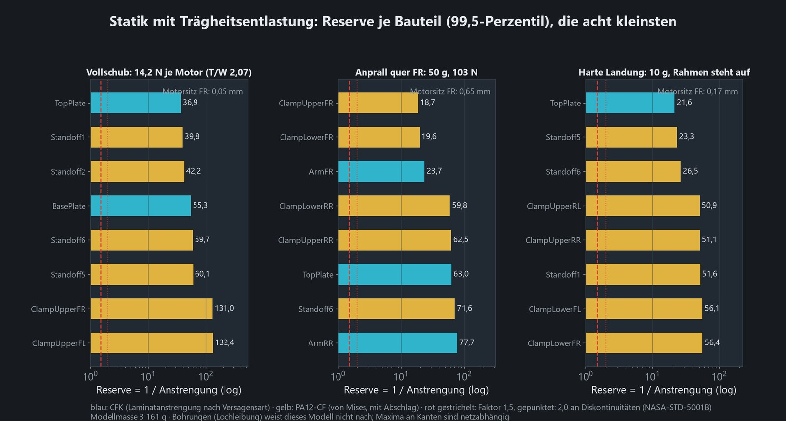
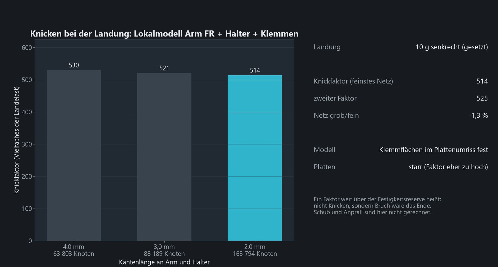
Ergebnisse der FEM-Simulation, Stand September 2026, seitlich scrollen.
Neben den Schwingungen rechnet die Simulation auch die Festigkeit: Vollschub aller Motoren, ein seitlicher Anprall am Arm und eine harte Landung. In allen drei Fällen hält jedes Bauteil mindestens das 18,7-Fache der Belastung aus, die Bohrungen selbst sind darin allerdings nicht nachgerechnet. Bevor ein Arm bei der Landung einknickt, müsste die Last das 514-Fache betragen, er würde also lange vorher brechen. Für den Flug zählt deshalb vor allem die Steifigkeit, nicht die Bruchgrenze.
Die Teile: was gekauft wird
Die Antriebsseite kommt fertig vom Hersteller. Vier Motoren T-Motor MN4012-11 mit 400 KV sitzen an den Armenden. Der KV-Wert gibt an, wie viele Umdrehungen pro Minute der Motor je Volt Spannung macht, und 400 KV passt zu großen Propellern an einem 6S-Akku. Mehr dazu im Motoren-Ratgeber. Die Carbon-Propeller stammen von CF Prop, in 13 und 14 Zoll.
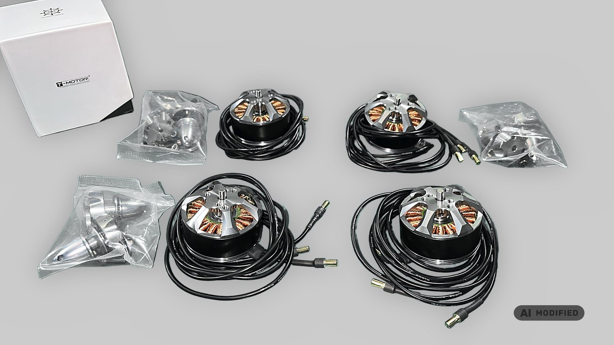
Gesteuert wird der Copter von einem Stack aus Flugregler und Motorregler, also zwei übereinander verschraubten Platinen. Der Flugregler OddityRC H743 rechnet die Fluglage, der Vierfach-Motorregler OddityRC Vortex treibt die Motoren an. Das Bild überträgt eine DJI O4 Air Unit Pro, die Steuerbefehle empfängt ein ExpressLRS-Empfänger auf 2,4 GHz, und für die Position sorgt ein GPS-Modul von HGLRC. Die Energie liefert ein 6S-Lithium-Polymer-Akku mit 6.500 mAh, der allein 777 g wiegt, also ein Viertel der Abflugmasse. Warum der Akku beim 13-Zöller so schwer wiegt, erklärt der Akku-Ratgeber.
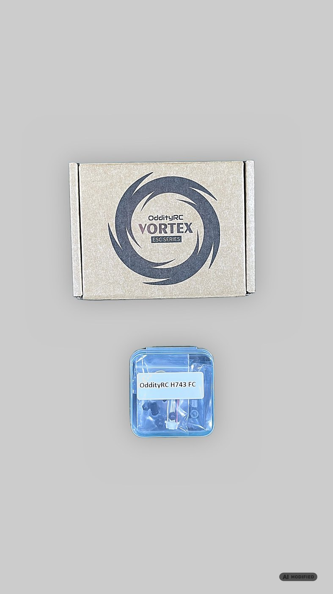
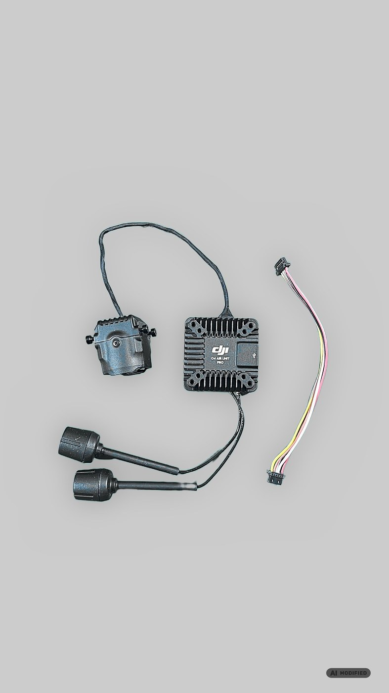
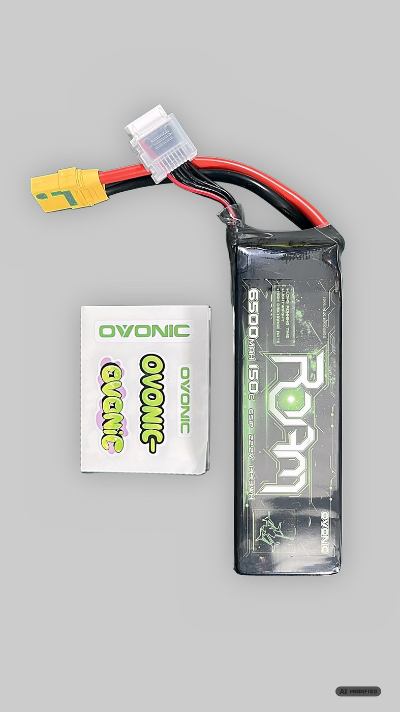
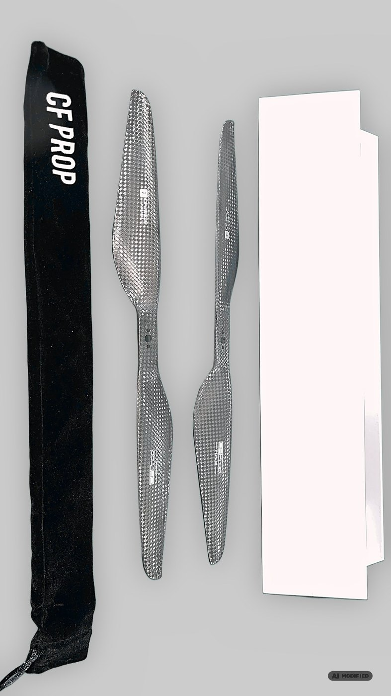
Hintergrund aller Fotos per KI ausgetauscht (AI MODIFIED), seitlich scrollen.
Die Teile: was gedruckt wird
Die Rumpfplatten und Arme werden später aus T700-Carbon gefräst, einem hochfesten Kohlefasergewebe. Fräsen kostet aber Zeit und Geld, und ein Fehler in der Zeichnung fällt oft erst beim Zusammenbau auf. Deshalb haben wir Platten und Arme vorab in PETG-CF gedruckt, einem mit Kohlefaser gefüllten Kunststoff. Die gedruckten Teile prüfen Form, Lochbilder und Passung, nicht die Festigkeit. Weil der Drucker nur 25 cm Bauraum hat, sind die Platten zweigeteilt und über eine Lasche verschraubt.
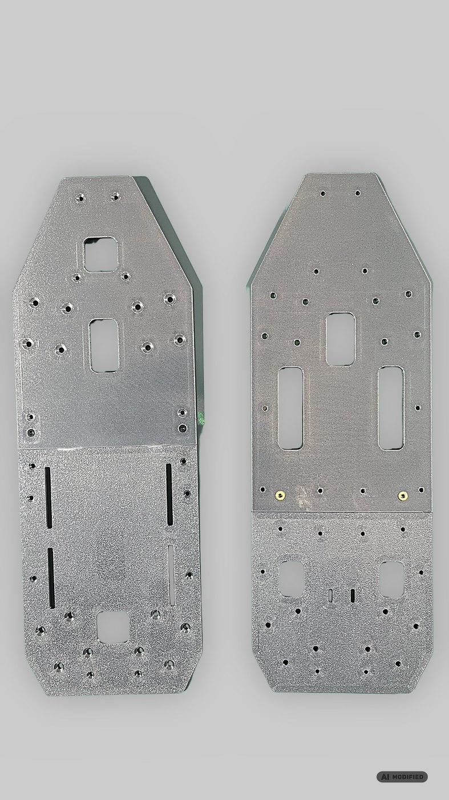
Gedruckt werden auch die Motorhalter und die Klemmblöcke der Arme, im fertigen Copter aus kohlefasergefülltem Polyamid. Dazu kommen fast zwanzig Halter und Füße aus gelbem TPU. Sie halten Antennen, Empfänger und GPS, dämpfen Vibrationen und geben bei einem harten Aufsetzer nach, statt zu brechen.
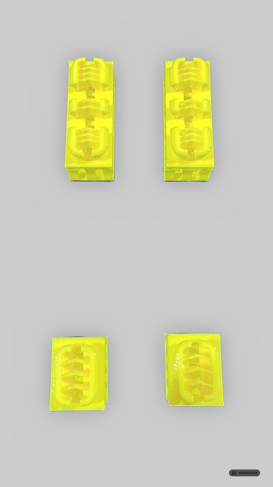
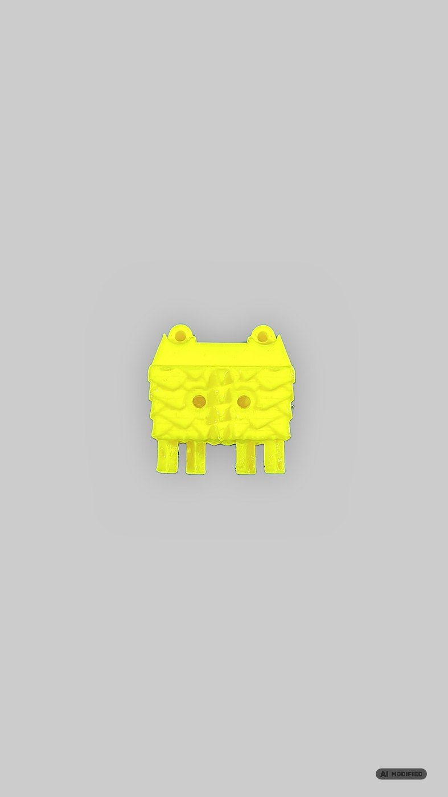
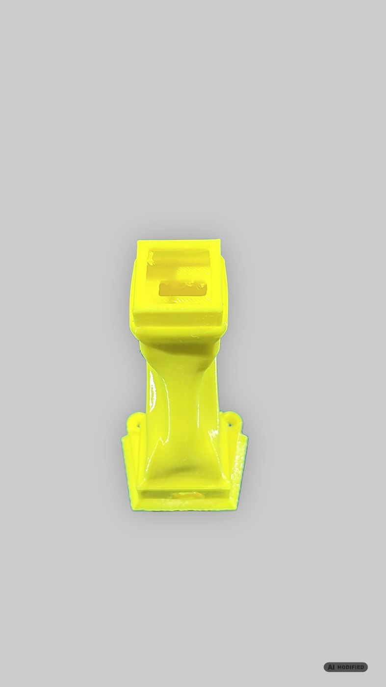
Hintergrund aller Fotos per KI ausgetauscht (AI MODIFIED), seitlich scrollen.
Im Zeitraffer: neun Tage am Drucker
Vom 16. bis zum 24. Oktober lief der Drucker 24-mal an neun Tagen. Die Kamera im Bauraum nimmt bei jeder neuen Schicht ein Bild auf. So entsteht für jeden Druck ein Zeitraffer, in dem ein Teil Schicht für Schicht aus der Platte wächst. Hier sind die gelben TPU-Teile in einem Zusammenschnitt, jeweils die letzten Sekunden vor dem fertigen Teil.
Nicht jeder Druck ging gut. Am 17. Oktober geriet der Druck der langen Armrohre aus dem Tritt, und am Ende zog die Düse nur noch Fäden durch die Luft. Übrig blieb ein Knäuel aus Kunststoff, das man in der Szene „Spaghetti" nennt. Die nächsten Anläufe liefen sauber durch.
Alles auf dem Tisch
Am 23. Oktober lag zum ersten Mal alles beisammen: Probeplatten, Armrohre, Klemmblöcke und Motorhalter, die gelben TPU-Teile und eine Handvoll Schrauben. Ab hier wird geschraubt, gelötet und verkabelt.
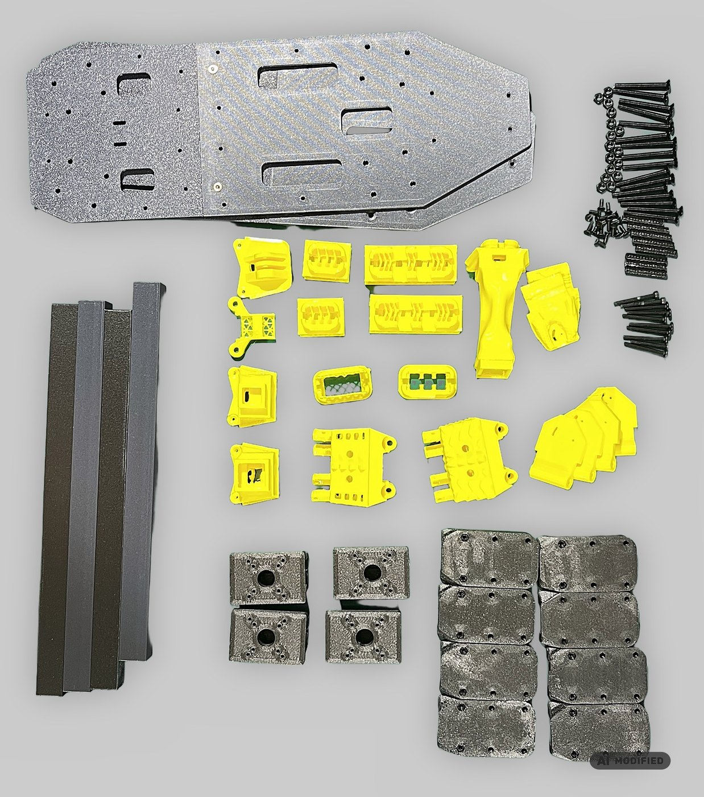
Wie es weitergeht
In Teil 2 bauen wir den Probe-Copter zusammen. Dabei löten wir den Motorregler und die Kondensatoren, verlegen die Kabel und montieren die Arme. Und wir zeigen, warum der erste Motorhalter nicht passte und der zweite beim Festziehen riss. In Teil 3 folgt der finale Aufbau mit den gefrästen Carbonteilen und der Erstflug. Dann zeigt sich auch, wie gut unsere Rechnung war.
Alle Zahlen stammen aus der Auslegung des DracoP07, Stand 25.10.2026, und aus der FEM-Simulation vom September 2026. Sie sind gerechnet, nicht gemessen. Die Renderings zeigen das CAD-Modell. Bei den Fotos ist der grüne Arbeitsuntergrund per KI durch Grau ersetzt; die Aufnahmen selbst sind echt und sonst nur in Helligkeit und Farbe korrigiert. Die Zeitraffer stammen unbearbeitet aus der Druckerkamera und sind nur geschnitten und im Tempo angepasst.
Änderungshistorie
- 25.10.2026 · Entwurf (noindex), nicht veröffentlicht